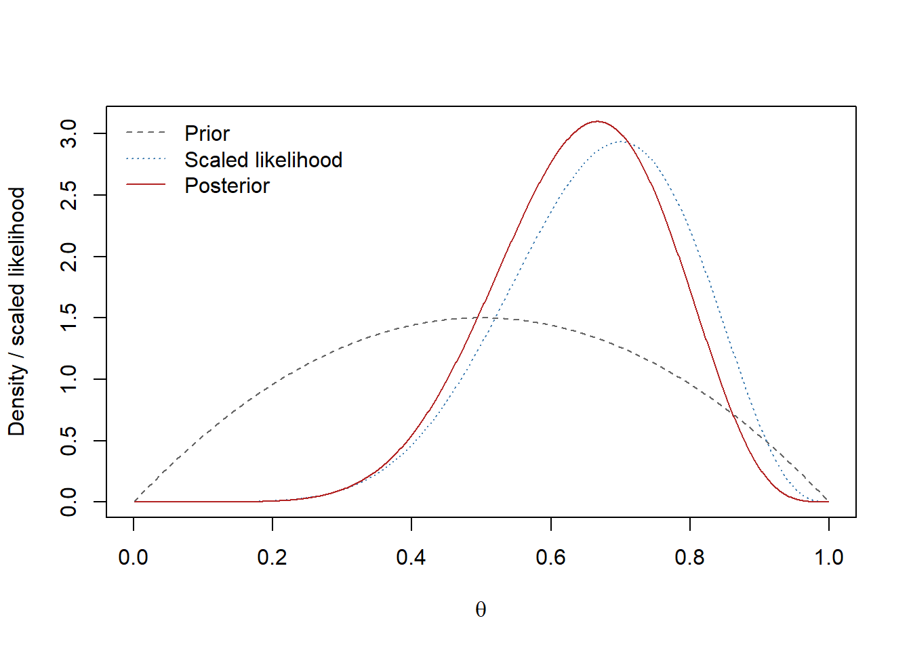

a <- 2; b <- 2; s <- 7; n <- 10
A <- a+s; B <- b+n-s
qbeta(c(0.025, 0.975), A, B)[1] 0.3857383 0.8614207Based on the corresponding unit in the supplied STAT 251 Midterm Exam Topics guide. Numerical examples are illustrative, not additional course data.
For \(Y\sim\operatorname{Bernoulli}(\theta)\), \(Y\in\{0,1\}\), \[P(Y=y\mid\theta)=\theta^y(1-\theta)^{1-y},\quad E(Y)=\theta,\quad \operatorname{Var}(Y)=\theta(1-\theta).\] If \(Y_1,\ldots,Y_n\) are iid Bernoulli given \(\theta\), then \(S=\sum_iY_i\sim\operatorname{Binomial}(n,\theta)\): \[P(S=s\mid\theta)=\binom ns\theta^s(1-\theta)^{n-s},\quad s=0,\ldots,n.\] Its mean is \(n\theta\) and variance is \(n\theta(1-\theta)\). The parameter \(\theta\) is the common success probability per trial, not the number of successes. The binomial assumptions require a fixed trial count, binary outcomes, and conditional independence with a common probability.
For \(a,b>0\), \[\pi(\theta)=\frac{\theta^{a-1}(1-\theta)^{b-1}}{B(a,b)}\mathbf1_{(0,1)}(\theta),\quad B(a,b)=\frac{\Gamma(a)\Gamma(b)}{\Gamma(a+b)}.\] The density is positive on \((0,1)\) (its topological support is \([0,1]\)), with no point mass at either endpoint. \[E(\theta)=\frac a{a+b},\qquad \operatorname{Var}(\theta)=\frac{ab}{(a+b)^2(a+b+1)}.\]
When \(a=b=1\) it is uniform. Both parameters above one give an interior mode \((a-1)/(a+b-2)\). Both below one give a U-shaped density; \(a<1\) gives a singularity near zero and \(b<1\) near one. With one shape at most one and the other at least one, it is monotone except for the uniform case. Equal shapes yield symmetry; \(a>b\) puts the mean above one-half.
A prior family is conjugate for a likelihood when every posterior remains in that family. Given \(s\) successes among \(n\) trials, \[\begin{aligned} \pi(\theta\mid s)&\propto \underbrace{\theta^s(1-\theta)^{n-s}}_{\text{likelihood kernel}} \underbrace{\theta^{a-1}(1-\theta)^{b-1}}_{\text{prior kernel}}\\ &=\theta^{(a+s)-1}(1-\theta)^{(b+n-s)-1}. \end{aligned}\] Recognizing the beta kernel on \((0,1)\) gives \[\theta\mid s\sim\operatorname{Beta}(A,B),\qquad A=a+s,\ B=b+n-s.\] Thus the normalized posterior is \(\theta^{A-1}(1-\theta)^{B-1}/B(A,B)\) on that interval.
a <- 2; b <- 2; s <- 7; n <- 10
A <- a+s; B <- b+n-s
qbeta(c(0.025, 0.975), A, B)[1] 0.3857383 0.8614207Conditional on the data, prior, and likelihood, this equal-tailed interval has posterior probability 0.95 of containing \(\theta\). A frequentist 95% confidence procedure covers the fixed true parameter in 95% of repeated samples under its assumptions. Its coverage statement is about the procedure, not a posterior probability assigned to the realized interval.
t <- seq(0.001, 0.999, length.out = 1000)
prior <- dbeta(t, a, b)
post <- dbeta(t, A, B)
# Scale likelihood to integrate to one only for a common plotting scale.
scaled_lik <- dbeta(t, s+1, n-s+1)
matplot(t, cbind(prior, scaled_lik, post), type = "l", lty = c(2,3,1),
col = c("gray40", "steelblue", "firebrick"),
xlab = expression(theta), ylab = "Density / scaled likelihood")
legend("topleft", c("Prior", "Scaled likelihood", "Posterior"),
col = c("gray40", "steelblue", "firebrick"), lty = c(2,3,1), bty = "n")
The likelihood favors values near \(s/n\); the prior adjusts their relative weights. Scaling the likelihood for display does not make it a posterior under the chosen prior.
For \(H_+:\theta>0.5\) versus \(H_-:\theta\leq0.5\), compute posterior region probabilities:
p_prior <- pbeta(0.5, a, b, lower.tail = FALSE)
p_post <- pbeta(0.5, A, B, lower.tail = FALSE)
c(posterior_Hplus = p_post,
BF_plus_minus = (p_post/(1-p_post))/(p_prior/(1-p_prior)))posterior_Hplus BF_plus_minus
0.8665771 6.4949680 Posterior odds equal prior odds times the Bayes factor for these complementary hypotheses with the prior’s induced conditional distributions. These are not p-values. A continuous beta prior gives \(P(\theta=0.5)=0\) before and after updating. Testing an exact point null against an alternative with positive posterior null probability requires an explicit prior point mass and model probabilities. A decision also depends on the losses of incorrect actions.
Common defaults include the uniform \(\operatorname{Beta}(1,1)\) and Jeffreys \(\operatorname{Beta}(1/2,1/2)\) prior. They encode different information; uniformity depends on parameterization. The formal Haldane kernel corresponds to \(a=b=0\) and is improper; its posterior is proper only if both successes and failures occur. Prefer a proper prior for predictive calculations and marginal likelihoods.
Starting with \(\operatorname{Beta}(a_0,b_0)\), adding hypothetical \(s_0\) successes and \(f_0\) failures gives \(\operatorname{Beta}(a_0+s_0,b_0+f_0)\). Relative to a uniform baseline, the added counts are \(a-1,b-1\), when nonnegative. The common shorthand of calling \(a,b\) prior counts describes the update algebra; always state the baseline convention. Hypothetical observations are an elicitation device, not actual new data.
Given a desired mean \(\mu\) and variance \(v\), set \[\kappa=\frac{\mu(1-\mu)}{v}-1,\quad a=\mu\kappa,\quad b=(1-\mu)\kappa,\] requiring \(0<\mu<1\) and \(0<v<\mu(1-\mu)\).
mu <- 0.6; v <- 0.02
kappa <- mu*(1-mu)/v - 1
c(a = mu*kappa, b = (1-mu)*kappa) a b
6.6 4.4 For \(n>0\), the posterior mean is \[\frac{a+s}{a+b+n}=\frac{a+b}{a+b+n}\frac a{a+b} +\frac n{a+b+n}\frac sn.\] The concentration \(a+b\) acts as a prior effective sample size in this mean-weighting sense. A large concentration relative to \(n\) pulls the result toward the prior mean; large \(n\) gives the sample proportion more weight. Compare plausible priors to assess sensitivity, especially with small samples.